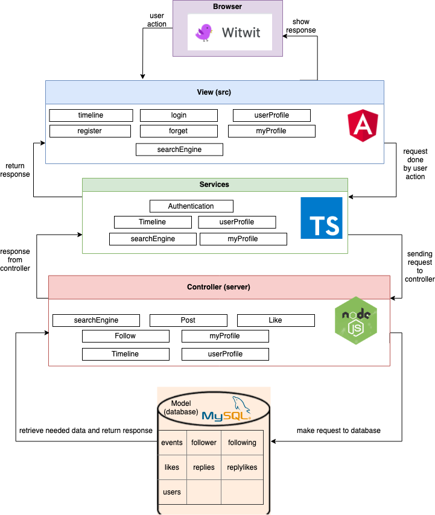

Project Summary
The project is about designing and implementing a friendly interface of the social
networking site Witwit. It is built to reflect social relation among users, that can like and
follow each other. This project is primarily built using front-end Angular framework, Node JS
for the back-end framework and MySQL as our database.
Architecture and Design
The overall architecture of the system is illustrated through a block diagram . The
architectural design of our project is centered around the process view and MVC pattern.

Infrastructure
Database (MySQL):
MySQL is a relational database which means that we can connect columns in
different tables together and that would help us to accomplish our goal. Furthermore, MySQL
uses tables which means that it is more organized than documented database.
Another option was MongoDB which uses collections and is not relational. In other
words, the code can become too messy too quickly if we want to manipulate two or more
collections at the same. Whereas MySQL provides us with the required SQL queries to be
able to manipulate several tables at the same time since it is relational.
Express.js:
Express.js is a highly flexible and simple web application framework for Node.js.
Since we decided to use Node.js for our website’s backend implementation, we had chosen
this framework since we had some experience working with it and it provides all the required
methods to communicate with the MySQL database.
An alternative option was Meteor.js which is another framework for Node.js.
However, Meteor.js is used for full stack development which means that we couldn’t have
used Angular for the frontend if we used this framework since it is used for both frontend and
backend.
Bootstrap:
Bootstrap is an open source front-end framework. Since we are ten people working
on the project, finding a way to provide consistency was essential. Bootstrap provides
consistency between developers by adding the same classes for a specific design. The need
for responsiveness in our web application also encouraged us to use Bootstrap.
Other alternatives were Pure.css or ZURB foundation. Both frameworks have very
few templates available and lack support for older versions of Internet explorer. Hence,
these options are less appealing than Bootstrap.
Angular Material:
Angular material is optimized for angular this means that it works seamlessly with
angular.It has a lot of appealing components and themes plus it is easy to use and learn.
An alternative was materialize. But since materialize does not support flexbox that
we’re using from bootstrap, it was not the way to go. Materialize is also known to be heavy
and large which is inefficient and would make our website slower.
Continuous Integration Environment : Travis-CI
With Travis CI, the tool enables us to ensure that every time we commit a change to
any branch, all test cases run. Moreover, we have two files that enable this, the .travis.yml
file and various test files inside our code. Whenever Travis CI detects a commit, it will run
the Travis file which will run all of our cases. The link above shows the results of all commits
we have done since implementing this.
Static Analysis:
The static analysis tool of our choice is the Codacy automatic code reviewer platform.
The tool is integrated with GitHub, therefore it can easily monitor the code quality throughout
the whole repository. It is possible to use it by logging in by your github account to their
website https://www.codacy.com/ . Then, you choose one of your project and it will execute
the static analysis for it. After our code has been reviewed, the analysis tool computed and
displayed the total number of issues for the entire project as shown in Figure 1. Among the
categories of the issues, we can observe that emerging issues are error prone and coding
style issues. Finally, Figures 2, 3 and 4 illustrates in which files these issues were found.
These aren’t the only files our project contains. However, according the codacy, there wasn’t
any issue after src/app/app.component.css file.